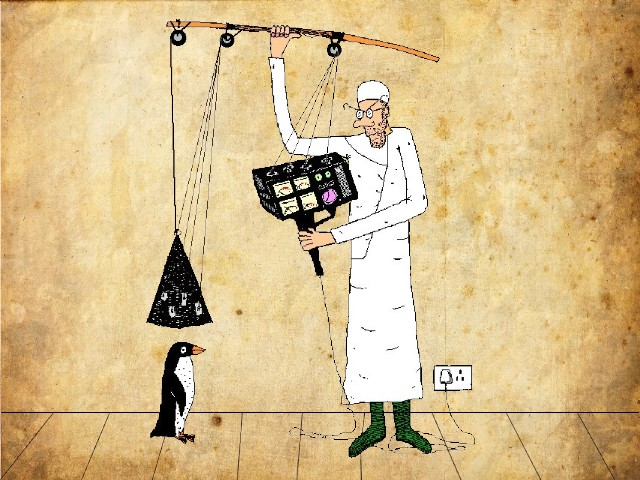

Monday, March the 15th, 2010
back to: title, date or indexes
Preparing another thrilling Hooting Yard animation, Outa_Spaceman created this splendid bepigmentised version of a picture of a boffin about to conduct a brain scan on a penguin…
